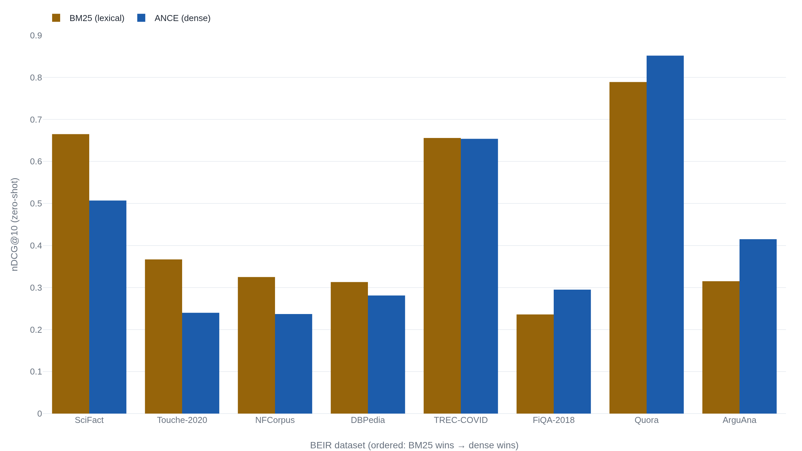

Rank fusion beats BM25 and the dense index it fuses, on 12 of 13 BEIR datasets
Reciprocal rank fusion sums 1/(60+rank) across two rankings and needs no score normalization, but it lifts nDCG@10 only where BM25 and the dense index disagree.
The query dense search ranks wrong
Search a corpus of support tickets for the exact string
panic: recursion after 6.2 upgrade. A dense retriever
encodes that query into a single 384-dimensional vector and returns
the tickets nearest to it: threads about upgrade crashes, about stack
overflows, about the 6.2 release notes. The one ticket that names
panic: recursion can rank below documents that are about
the right topic and answer the wrong question. The retriever did
nothing wrong. It was built to find text that means something similar,
and a user's query is not guaranteed to read as similar to the
document that answers it.1
To a 384-dimensional embedding, 6.2 and 6.1
sit almost on top of each other, and an exact token that carries the
whole query dissolves into the vector's general sense of the
sentence.2
BM25, the lexical retriever that has anchored search since the 1990s,
has the opposite failure. It puts that ticket first, because it matches
the literal tokens, and it misses the paraphrased ticket that
describes the same crash without ever using the word
panic. Neither index is broken. They fail on different
queries, and that is the reason to fuse them rather than pick one.
BM25 saturates on a repeated term
BM25 scores a document against a query by summing a weight over the shared terms. Each term's weight has two parts: how often the term appears in the document, damped, and how rare the term is across the collection. The damping is what separates BM25 from plain term frequency times inverse document frequency.
tf is the term's frequency in the document,
dl the document length, avdl the average
length, and w_i^RSJ reduces to a form of inverse
document frequency when no relevance data is available.3
The property to notice is saturation. As tf grows, the
fraction approaches a ceiling of one: any single term's contribution
"cannot exceed a saturation point, however frequently it occurs in the
document," which the monograph calls "a very valuable property of the
BM25 weighting function."3
The tenth occurrence of a word barely outscores the ninth. The
constant k1 sets how fast that ceiling is reached, and
b sets how hard a long document is penalized:
b = 1 applies full length normalization,
b = 0 switches it off.3
The monograph offers no closed form for either and reports that
"values such as 0.5 < b < 0.8 and
1.2 < k1 < 2 are reasonably good in many
circumstances," while warning that the optimum depends on the
documents and the queries.3
Building the index is three lines. The one caveat is that the query must be tokenized exactly as the documents were, or the term matching is comparing two different alphabets.4
from rank_bm25 import BM25Okapi
def tokenize(text):
return text.lower().split() # the same function on both sides
corpus = [tokenize(doc) for doc in documents]
bm25 = BM25Okapi(corpus, k1=0.9, b=0.4) # tuned; the library default is k1=1.5, b=0.75
def bm25_ranking(query, n):
scores = bm25.get_scores(tokenize(query)) # one score per document
return scores.argsort()[::-1][:n] # doc indices, best firstk1 and b are set to
the values tuned for BEIR, not the library defaults.4
Note the two settings on one line. rank_bm25's
BM25Okapi defaults to k1=1.5, b=0.75, higher
than the values tuned above.4
A BM25 number reported at one setting is not the number at another, so
the parameters travel with the score wherever it appears.
The dense index trades the token for meaning
The dense side encodes each document into one vector and ranks by
cosine similarity to the query vector. With a sentence-transformer
model this is also three lines, and one fact about the model collapses
the third. The
all-MiniLM-L6-v2 model maps text to a 384-dimensional
space and returns vectors that are already L2-normalized, so cosine
similarity is a plain dot product and the whole index is one matrix
multiply.2
import numpy as np
from sentence_transformers import SentenceTransformer
model = SentenceTransformer("sentence-transformers/all-MiniLM-L6-v2")
# 384-dim, L2-normalized, so cosine == dot product
doc_vecs = model.encode(documents, normalize_embeddings=True) # (N, 384)
def dense_ranking(query, n):
q = model.encode(query, normalize_embeddings=True) # (384,)
scores = doc_vecs @ q # cosine similarity
return scores.argsort()[::-1][:n] # doc indices, best firstdoc_vecs @ q for an approximate-nearest-neighbor
index.5
The doc_vecs @ q line is a full scan of every vector.
That is fine at small scale and stops being fine quickly. Willison
measured roughly 400 milliseconds for a brute-force similarity scan
over about 20,000 embeddings, above which he reaches for a vector
database or a custom index.1
The scan is the honest floor; an approximate index is what a corpus of
any size actually runs.
The dense index has a failure mode the code does not show. The same model truncates any input longer than 256 word pieces by default.2 A long document is encoded from its first few hundred tokens and the tail is invisible to the vector. The lexical index has no such ceiling: a rare term on the last page of a long document still matches. This is one more axis on which the two indexes disagree, and disagreement is exactly what fusion feeds on.
Fusion works on ranks, not scores
Now there are two ranked lists and one problem. The BM25 scores are an unbounded sum of term weights. The dense scores are cosine values in the interval from minus one to one. Adding them directly means adding two quantities on unrelated scales, and the usual repair, min-max normalizing each list into the interval from zero to one, depends on the maximum and minimum in the candidate set, so the same document gets a different normalized score depending on which other documents happened to be retrieved alongside it.
Reciprocal rank fusion refuses the whole problem. It discards the scores and keeps only each document's position in each list. A document's fused score is the sum, across the input rankings, of one over a constant plus its rank in that ranking.
- r(d)the document's 1-based position in one input ranking; a document absent from a list contributes nothing from it.
- kthe rank constant, fixed at 60 in the original paper and never re-tuned.
- \sum_{r \in R}the sum across every input ranking being fused.
Because the formula reads only r(d), the raw scores never
have to be reconciled. Elastic, which ships this formula unchanged as
its rrf retriever, states the operational consequence
plainly: "RRF requires no tuning, and the different relevance
indicators do not have to be related to each other to achieve
high-quality results."7
The theoretical reason is that ranks are scale-free. A rank of 1 means
the same thing whether it came from an unbounded BM25 sum or a bounded
cosine.
The constant k is a real knob, not decoration. The
authors fixed it at 60 during a pilot and never changed it, choosing a
reciprocal so that "the importance of lower-ranked documents does not
vanish," and a nonzero constant so that k "mitigates the
impact of high rankings by outlier systems."6
The behavior follows from the formula. A larger k
flattens the gap between rank 1 and rank 10, since every contribution
shrinks toward 1/k and fusion approaches a plain count of
how many lists ranked the document at all. A smaller k
sharpens the reward for the very top ranks. Elastic ships 60 as the
default, the same value the paper never re-tuned.7
def rrf(rankings, k=60):
# rankings: list of ranked doc-id sequences, best first
scores = {}
for ranking in rankings:
for rank, doc_id in enumerate(ranking, start=1):
scores[doc_id] = scores.get(doc_id, 0.0) + 1.0 / (k + rank)
return sorted(scores, key=scores.get, reverse=True)
# the whole pipeline: two independent rankings, fused by rank alone
fused = rrf([bm25_ranking(query, 100), dense_ranking(query, 100)])1.0 / (k + rank), summed per document across both
lists. It is the exact term from the paper and the exact loop
Elastic documents.67
That is the entire method. Two retrievals, a dictionary, one division per candidate per list. The design pays off in what it does not need: no shared score scale, no per-query normalization, no tuning data. Cormack and colleagues built RRF as a baseline for learning-to-rank systems, and it beat Condorcet Fuse, CombMNZ, and the best individual ranker by 4 to 5 percent on average, outperforming Condorcet in all seven experiments.6 An unsupervised sum of reciprocal ranks out-ranked the supervised machinery it was meant to establish a floor for.
Whether it helps is a property of the corpus
Fusion recovers value only when the two lists disagree. If BM25 and the dense index rank the same documents in nearly the same order, fusing them returns roughly that order and costs a second index for nothing. So the prior question is empirical: on a given corpus, do lexical and dense retrieval actually disagree, and does either have a systematic edge? BEIR, a benchmark of 18 retrieval datasets evaluated zero-shot, answers it dataset by dataset, and the answer is a split.8

Read across the datasets and no retriever dominates. The dense bi-encoder wins clearly on Quora and FiQA-2018, and wins outright on ArguAna, where BM25's 0.315 trails ANCE's 0.415. BM25 wins by a wide margin on SciFact, NFCorpus, and Touché-2020, and edges most of the rest.8 Averaged over all 18 datasets, the gap is stark in BM25's favor: the original DPR dense retriever trails BM25 by 47.7 percent, and ANCE by 7.4 percent.8 BEIR's own conclusion is that BM25 "heavily underperforms neural approaches" in-domain yet "is a strong baseline for generalization," which is why the authors insist retrieval methods be evaluated across a broad range of datasets.8
BM25's out-of-domain strength is real, and partly an artifact worth naming. The BEIR authors show that some datasets carry "a strong lexical bias," because lexical models were often used when the relevance judgements were pooled, which "can give an unfair disadvantage to non-lexical approaches." When they manually re-annotated the missing judgements on TREC-COVID, the non-lexical systems improved significantly.8 Part of the lexical edge is the benchmark's pooling, not the retriever. So the honest reading is neither "dense wins out of domain" nor "BM25 wins out of domain." It is that the two disagree in a pattern specific to the corpus, which is precisely the condition under which fusing them is worth measuring rather than assuming.
The lift, and the corpus it skips
The measurement that closes the case reports both baselines beside the
fused number. Jo Kristian Bergum ran it on Vespa across the BEIR
zero-shot datasets, and he did the honest thing first: he tuned the
BM25 baseline up to k1=0.9, b=0.4 and combined title and
body, reaching 0.453 average nDCG@10, above the BEIR paper's reported
BM25 average. Any lift is then a lift over the hardest version of the
simple thing.9
Against that baseline he set ColBERT, a late-interaction dense retriever heavier than the single-vector bi-encoder in Fig. 2, which averaged 0.363, well below the tuned BM25. Fusing the two by reciprocal rank reached 0.481, best on 12 of the 13 datasets, a 6.2 percent gain over the strong BM25 baseline and a 32.5 percent gain over ColBERT alone.9
The fused ranking beat both of its own inputs, and the dense input was the weaker one. ColBERT at 0.363 loses to tuned BM25 at 0.453, yet fusing the loser into the winner lifts the winner to 0.481. The gain is not that the second retriever is better. It is that it fails on different queries.9
The per-dataset rows show both faces of that mechanism. On FEVER, BM25 scores 0.751 and ColBERT only 0.534, a wide gap, and the fused ranking still reaches 0.779: fusion salvaged value from a much weaker partner.9 The opposite risk shows up on ArguAna, where BM25 scores 0.315 and ColBERT collapses to 0.233.8 When one list is far worse and disagrees for the wrong reasons, fusion pulls the strong ranker toward the weak one and can dilute it. Fusion usually helps and occasionally does not, and which case a corpus is in is not knowable from the averages.
The cost of finding out is two indexes, not one. A hybrid must build, store, and query both a lexical index and a dense approximate-nearest-neighbor index, then fuse over the union of their candidates. No source here benchmarks single-index against two-index query latency head to head, so the honest statement is qualitative: roughly the two retrievals plus a linear pass over the merged candidates, against double the index to maintain. Willison's 400 millisecond brute-force scan is the only concrete latency anchor in reach, and it measures the dense side alone.1 A production hybrid replaces that scan with an approximate index and runs the fusion in Fig. 3, whose cost is a dictionary and one division per candidate.
So the pipeline is the easy part. Fig. 1 builds the lexical index,
Fig. 2 the dense one, and the single expression
1.0 / (k + rank) in Fig. 3 fuses them without ever
reconciling a score. The decision is the hard part, and BEIR settles
how to make it. Run BM25 alone and the dense index alone on your own
corpus, with your own relevance judgements, and read the two numbers
before you fuse. If the two retrievers rank alike, fusion buys a second
index and little else. If they disagree the way BM25 and ColBERT
disagreed on FEVER, the fused ranking can beat both, including the one
that loses on its own. The measurement, not the marketing, tells the
two corpora apart.
Sources
- Simon Willison — "Embeddings: What they are and why they matter" (2023). His own measurements: a ~400 ms brute-force similarity scan over ~20,000 embeddings, and the point that a query is not guaranteed to be semantically similar to the document that answers it.
-
sentence-transformers —
all-MiniLM-L6-v2model card. 384-dimensional output, L2-normalized embeddings, and a default truncation at 256 word pieces. -
Robertson & Zaragoza — "The Probabilistic Relevance
Framework: BM25 and Beyond," Foundations and Trends in Information
Retrieval (2009). The BM25 term weight (Eq. 3.15), the saturation
property, the roles of
k1andb, and the parameter ranges0.5 < b < 0.8,1.2 < k1 < 2. -
dorianbrown —
rank_bm25library source and README.BM25Okapiconstructor defaults (k1=1.5, b=0.75),get_scoresreturning one score per document, and the same-tokenizer-on-both-sides caveat. -
sentence-transformers — "Semantic Search" documentation.
SentenceTransformer,encode, and cosine similarity as the default scoring, reducible to a dot product on normalized vectors. -
Cormack, Clarke & Buettcher — "Reciprocal Rank Fusion
outperforms Condorcet and individual Rank Learning Methods," SIGIR
2009. The fusion formula, the
k = 60constant, the intuition for a reciprocal and a nonzero constant, and the 4–5 percent gain over Condorcet, CombMNZ, and the best ranker. -
Elastic — "Reciprocal rank fusion" reference documentation.
The
rrfretriever's pseudocode and itsrank_constantdefault of 60, plus the operational claim that RRF requires no tuning and no relation between the indicators. - Thakur, Reimers, Rücklé, Srivastava & Gurevych — "BEIR: A Heterogeneous Benchmark for Zero-shot Evaluation of Information Retrieval Models," NeurIPS 2021. Table 4 per-dataset nDCG@10 (BM25 vs DPR, ANCE, ColBERT), the average deficits (DPR −47.7%, ANCE −7.4%), and the TREC-COVID lexical-bias re-annotation.
-
Jo Kristian Bergum — "Improving Zero-Shot Ranking with Vespa
Hybrid Search – part two," Vespa Blog (2022). The tuned BM25
baseline (
k1=0.9, b=0.4, 0.453 average), ColBERT alone (0.363), and the RRF hybrid (0.481, best on 12 of 13 datasets), with the FEVER per-dataset rows.